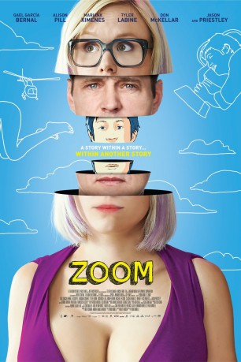
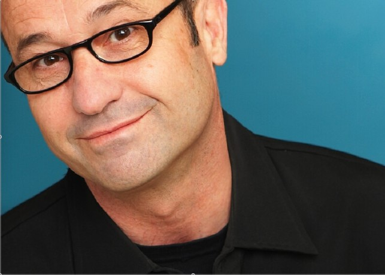

#6296 Zoom - Good Girl Gone Bad
 
 IMDB-Wertung: 6.2 / 10
IMDB-Wertung: 6.2 / 10  Metascore: 0
Metascore: 0 
Emma zeichnet Comics, ist ein bisschen schräg. Sie liebt es, sich Geschichten mit ihrem Mr. Perfect zu auszudenken. In ihrem echten Job bemalt sie Latexpuppen - und muss sich mit ihrem lästigen Kollegen Bob herumschlagen. Und seit sie die neuen Brüste hat, kann sie sich vor Männerblicken gar nicht mehr retten. Aber das ist nicht das Ding, das die Geschichte wirklich ins Rollen brachte. Eines Tages findet sie in ihrem Postfach eine Riesenlieferung Koks - und hat plötzlich ein Riesenproblem. Das Zeug gehört ihrem Nachbarn, der es zurückhaben möchte. Was tun? Sie versteckt es erstmal in den Latexpuppen und macht sich auf die Suche nach einem geeigneten Dealer, der das Koks für sie verkaufen soll. Als die Puppen aber aus dem Lager verschwinden, geraten die Dinge komplett außer Kontrolle. Und das soll nicht das einzige bleiben, das in dieser turbulenten Story aus dem Ruder läuft.
Jahr: 2015
Dauer: 97 Minuten
FSK:
Land: Brasilien Studio: Sunfilm EntertainmentTonspuren: DTS - ,
Untertitel: Deutsch,
Auflösung: 1080p (1920x816) Größe: 3932 MB
Genre: Drama, Komödie, Animation/Trick
Regisseur: Pedro Morelli
Drehbuch: Frank B. Gilbreth Jr.
Soundtrack:
Darsteller:
 Tyler Labine als Bob
Tyler Labine als Bob Alison Pill als Emma
Alison Pill als Emma Michael Eklund als Moustache Guy
Michael Eklund als Moustache Guy- J. Adam Brown als Photographer / Announcer
 Gael García Bernal als Edward
Gael García Bernal als Edward Patrick Garrow als Norman
Patrick Garrow als Norman- Jason Priestley als Dale
 Don McKellar als Horowitz
Don McKellar als Horowitz Jennifer Irwin als Marissa
Jennifer Irwin als Marissa- Rick Roberts als Plastic Surgeon
- Clé Bennett als Carl Stromway
-  Michael Caruana als Married Man
- Amanda Barker als Married Woman
- Julian DeZotti als Flirty Man 2
- Albert Chung als Love Doll Worker
- Luisa Moraes als Eros Sales Girl
- Mariana Ximenes als Michelle
- Charles Paraventi als Assistant Director
- Moonlyn als Candi, The Receptionist
- Jorge Cerruti als Forró Man 1
- Edmilson Cordeiro als Forró Man 2
- Claudia Ohana als Alice
- Giselle Baptista als Twin Girl 1
- Michelle Baptista als Twin Girl 2
- Ty Kostyk als Flirty Man 1
- Cesar Mello als TV Reporter
- Ricardo Neves als Policeman
- Donizeti Mazonas als Forró Man 3
- Nara Mendes als Michelle's Mother
- João Gago als Michelle's Father
Datei: X:\2015(N-Z)\Zoom - Good Girl Gone Bad (2015, FSK, 1920x816).mkv seit 06.06.2017
Festplatte: HD 2015(A-Z)
 Es gibt insgesamt 161 Filme in der Gruppe '2015(N-Z)'
Es gibt insgesamt 161 Filme in der Gruppe '2015(N-Z)'